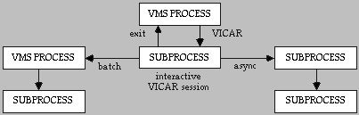

5.1 VICAR Libraries
5.2 Processing Modes
5.2.1 Interactive or Synchronous Processing Mode
5.2.1.1 VICAR DCL Mode - VMS Systems
5.2.1.2 VICAR USH Mode - UNIX Systems
5.2.2 Asynchronous Processing
5.2.2.1 Asynchronous Processing - VMS Systems
5.2.2.2 "Background" Processing - UNIX Systems
5.2.3 Batch Processing Mode
5.2.3.1 Batch Processing - VMS Systems
5.2.3.2 Batch Processing - UNIX Systems
5.3 VICAR Use of Subprocesses
5.4 Session Customizing Procedures
5.4.1 Logon Procedures
5.4.2 Logoff Procedures
5.5 Aborting a VICAR Command
Within the following section, different aspects of the VICAR
environment will be covered. The user will be introduced to the VICAR
Library, processing modes, and subprocesses. The user will learn how
to customize a VICAR session and abort a VICAR command. The novice
user should note that several concepts presented in this section are
explained in more detail later on in this document.
5.1 VICAR Libraries
Seven libraries contain the executive, applications and system
routines within VICAR. Each library is known by its system-wide
logical name or environment variable (pointing to a system
sub-directory).
LIBRARY CONTENTS
VMS UNIX
V2$LIB $V2LIB VICAR executive routines
VIDS$LIB $VIDSLIB VICAR system routines
TAE$UTIL $TAEBIN/TAEPLAT Various system utilities
R1LIB $R1LIB Application procs
R2LIB $R2LIB Application procs
R3LIB $R3LIB Application procs
M2LIB $TAEMENU Menus
Three libraries are available for application procs so that a facility may segregate its procs as it chooses.
VICAR establishes a default search hierarchy containing these seven
libraries, as well as the user's current default directory. A change
of the current default directory after entry into VICAR is not
reflected in the search hierarchy. The user may bypass all such
searches by explicitly prefixing the proc name with the library name
and a colon (e.g., R2LIB:STRETCH).
The user may display the currently established search hierarchy at any
time with the command show (Appendix 10.4). The default hierarchy is
listed below with the search being from top to bottom.
Example: Show user's library hierarchy.
VMS: Note the location of the user's current default
directory is UD:[USERID].
VICAR>SHOW
User Library ($USERLIB):
UD:[USERID]
Application Libraries ($APLIB):
liblst:-cpd
liblst:-pdf
r3lib:-cpd
r3lib:-pdf
System Library ($SYSLIB):
TAEPDF
UNIX:
VICAR>show
User Library ($USERLIB):
.
Application Libraries ($APLIB):
$V2LIB
$VIDSLIB
$R1LIB
$R2LIB
$TAEBIN/$TAEPLAT
$R3LIB
System Library ($SYSLIB):
$TAEPDF
On VMS systems, liblst is a logical name which points to
all the VICAR libraries.
Example: Show user's library hierarchy.
VICAR>DCL SHOW LOGICAL LIBLST
"LIBLST" = "V2$LIB" (LNM$PROCESS_TABLE)
= "VIDS$LIB"
= "R1LIB"
= "R2LIB"
= "$TAEUTIL"
Within each library, compiled PDFs (file type .cpd)
are given preference over slower, uncompiled PDFs (file type
.pdf). Therefore, a program which has a
.cpd and a .pdf will always have its faster
version chosen. See Section 7.3.6 for
more information on compiled PDFs.
This default hierarchy is easily altered either with the use of the
intrinsic command setlib (Appendix 10.4), or within the user's ULOGON
procedure (Section 5.4.1).
Example: Place starlib: in front of the current
library list and display.
VICAR>setlib (starlib:,*)
VICAR>show
User Library ($USERLIB):
.
Application Libraries ($APLIB):
starlib:
$V2LIB
$VIDSLIB
$R1LIB
$R2LIB
$TAEBIN/$TAEPLAT
$R3LIB
System Library ($SYSLIB):
TAEPDF
Example: Delete starlib: from the current library
list and display.
VICAR>setlib-delete starlib:
VICAR>show
User Library ($USERLIB):
.
Application Libraries ($APLIB):
$V2LIB
$VIDSLIB
$R1LIB
$R2LIB
$TAEBIN/$TAEPLAT
$R3LIB
System Library ($SYSLIB):
TAEPDF
When a user communicates directly with VICAR by means of a terminal, and VICAR immediately acknowledges and executes the user's requests, the user is in the "interactive processing mode". Within the interactive session the user might use:
5.2.1.1 VICAR DCL Mode - VMS Systems
On VMS systems, the user has the ability to execute DCL commands
without leaving the VICAR environment. The user can execute a single
DCL command, or actually enter the DCL mode while still within
VICAR.
In the first case, the user is able to execute a one line DCL command
by typing DCL and the command.
Example: Execute a DCL command from VICAR.
VICAR>DCL SHOW DEV MTA0
If the user wanted to do something in DCL that requires more than a
single command line, a second method is available. If, for example,
the user wanted to send a mail message or edit a file,
DCL would be typed at the VICAR prompt. The user would
then receive a new prompt, _$, indicating that the DCL
mode of VICAR had been entered.
Syntax: Enter VICAR's DCL mode.
Within this mode the user is able to do almost everything that could
be done in the normal DCL mode. Some DCL programs may not work in
VICAR's DCL mode.
The normal VICAR mode can be re-entered by typing
VICAR>DCL
_$
EXIT,
VICAR or Control-Z.
_$ EXIT
VICAR>
5.2.1.2 VICAR USH Mode - UNIX Systems
Similarly, on UNIX systems, the user has the ability to execute UNIX
shell commands without leaving the VICAR environment by typing
ush at the command line. (USH stands for User SHell.)
However, ush should be used much less frequently than
dcl is, because in a windowing environment it makes more
sense to open another window than to suspend VICAR in order to execute
shell commands. The ush command should be used primarily
in procs rather than interactively.
Example: Execute a USH command from VICAR.
VICAR>ush df
Syntax: Enter VICAR's USH mode.
VICAR>ush
%
The 'shell' that is invoked is the command interpreter 'sh' or 'csh'
as defined by the symbol SHELL when you logged in. You
may redefine the value of SHELL from 'sh' to 'csh' or
vice versa before invoking TAE.
The normal VICAR mode can be re-entered by typing
Control-D, or exit at the shell prompt.
Syntax: Return to VICAR from USH mode.
% exit
VICAR>
BEWARE Changing the default device/directory via
the shell command cd while in USH mode or terminating a
USH command with a backslash (\) will cause TAE to
malfunction.
5.2.2 Asynchronous Processing
EXPERT The Asynchronous processing mode allows a user
to execute a proc in a separate subprocess without interfering with
the user's current interactive session. This mode may sometimes be
preferable to the Batch mode because the separate subprocess runs
simultaneously with, and at the same priority as, the interactive
session. The user's interactive environment is duplicated in the
asynchronous subprocess, thus relieving the user from having to
redefine commands and globals. More than one asynchronous job may run
at the same time. Once submitted, the job is executed
immediately.
EXPERT Because asynchronous jobs are executing in a separate subprocess, they cannot directly communicate with the user's terminal. However, they may communicate indirectly by requesting additional parameter inputs. See the TAE Command Language User's Manual and Section 7.2.5 for further information on these "dynamic parameters".
5.2.2.1 Asynchronous Processing - VMS Systems
EXPERT For asynchronous jobs run on a VMS system, the
VICAR runstream information is written into a log file named
PROCNAME.TML.
Example: Submit TESTGEN.PDF as an asynchronous
job.
VICAR>TESTGEN|RUNTYPE=ASYNC|
[TAE-ASYNCJOB]Asynchronous job 'TESTGEN' initiated.
The user may check on the status of the job with the intrinsic command
SHOW-ASYNC.
Example: Monitor the progress of TESTGEN
VICAR>SHOW-ASYNC
NAME PROC STATE SFI SKEY
TESTGEN TESTGEN ACTIVE 0 TESTGEN
BEWARE
The user should not exit a VICAR interactive session while asynchronous jobs are executing. If this happens, all asynchronous jobs will be aborted.BEWARE The user is also advised to avoid using tape operations within the Asynchronous mode until a known bug can be corrected. Tape drives can be successfully allocated, mounted, written or read. However, the tapes cannot be successfully dismounted and/or remounted within the Asynchronous mode.
5.2.2.2 "Background" Processing - UNIX Systems
VICAR running on UNIX systems does not have an "asynchronous mode";
given that a user can have several windows open at the same time, it
is usually unnecessary. However, processing jobs in the "background"
is similar in concept.
To do this, your proc will need to be submitted from the shell prompt.
Example: Submitting a VICAR proc from the shell prompt. (Note: this only works on SunOS, not Sun Solaris systems.)
% cat test.pdf
Procedure !test
Body
slogon
gen out.img 10 10
label-list out.img
ush ps
End-proc
% taetm test > test.log &
[1] 9147
The slogon statement in the proc after the
Body command is necessary if the proc is going to be run
from the UNIX shell prompt. However, it may not be present when
running the proc from the VICAR command line. The > sign redirects
the output from the proc to the file test.log, rather
than to your screen. (There is currently a bug in VICAR, such that
the output is not written to the output file in the correct order.
This should be fixed in future versions.) The ampersand (&)
forces the job into the background. Typing fg at the
prompt will bring the job back into the foreground.
5.2.3 Batch Processing Mode
The user may wish to execute a proc in batch. Batch processing is
achieved by means of submitting a file, commonly referred to as a job,
to a batch queue which will create the proper environment to execute a
proc. Upon submitting the file, the user relinquishes control of the
job to the operating system, thus freeing the terminal and allowing
the user to continue with other tasks. The user may check on the
status of the job with the intrinsic command SHOW.
BEWARE The default directory for a batch job is the directory from which the submittal occurred. If submitted from a subdirectory, all file names should be fully qualified because this subdirectory may not exist on all disks referred to in the job.
5.2.2.1 Batch Processing - VMS Systems
EXPERT There are several ways to invoke batch
processing in VICAR on VMS systems. This section will address the
VAX/VMS default batch queue, SYS$BATCH. If this queue is
not on the user's system, consult the local system manager for
information on what is available.
EXPERT One way to create a batch process is to use
the intrinsic command BATCH-SUBMIT (Appendix 10.4). After Tutoring on a
desired proc and performing a Tutor SAVE (Appendix 10.8) on the parameter values
selected, the user can submit a job with the BATCH-SUBMIT
command. This can be done in a Tutor session on
BATCH-SUBMIT or interactively.
Syntax:
VICAR>BATCH-SUBMIT PROC=proc_name +
VICAR>+ SAVEFILE=savefile_name QUEUE=queue_name +
VICAR>+ STDOUT=output_file
Example: After specifying parameters in Tutor on proc GEN,
submit to batch queue.
VICAR> BATCH-SUBMIT PROC=GEN.PDF SAVE=GEN.PAR
Job 2038 submitted to queue SYS$BATCH
later:
Job GEN (queue SYS$BATCH, entry 2038) completed
EXPERT Another method for submittim a job is to use
the command qualifier RUNTYPE (Section 7.2.1.3). Specifying a valid
queue_name or NORUN will produce two different
submitting techniques. Specifying SYS$BATCH as the
queue_name causes the job to be automatically placed in
that queue and executed.
Example: Submit proc TESTGEN to batch queue
SYS$BATCH
VICAR>TESTGEN |RUNTYPE=(BATCH, SYS$BATCH)|
Job 2039 submitted to queue SYS$BATCH
VICAR>SHOW-BATCH SYS$BATCH
Batch queue MIPL1_SYS$BATCH, on MIPL1::
Jobname Username Entry Status
TESTGEN USERID 2039 Executing
later:
Job TESTGEN (queue SYS$BATCH, entry 2039) completed
EXPERT Specifying NORUN as the
queue name disables the act of job submittal. Instead, a job file is
created containing all commands needed to execute the proc in batch.
This method allows the user to issue the DCL SUBMIT
command with any or all of its associated qualifiers, rather than
accepting the VICAR defaults.
Example: Create the job file for TESTGEN proc
before submitting it.
VICAR> TESTGEN|RUNTYPE=(BATCH,NORUN)|
Created batch job file 'TESTGEN.JOB'.
EXPERT The .JOB file
(TESTGEN.JOB for this example) would then be submitted
using the DCL SUBMIT command, unless other provisions
have been made by the system manager.
Example: Submit TESTGEN.JOB to
SYS$BATCH queue.
VICAR>DCL SUBMIT/NOPRINT/NOTIFY TESTGEN.JOB Job TESTGEN (queue SYS$BATCH, entry 2041) started on SYS$BATCHlater:
Job TESTGEN (queue SYS$BATCH, entry 2041) completedEXPERT Upon completion of a batch job, the user can access a file containing all of the processing information collected during the batch job execution. The log file is located in the directory from which the job was submitted, and it is called PROCNAME.LOG (
TESTGEN.LOG for the above
example). EXPERT The user may also delete a batch job at any time.
Syntax:
VICAR>BATCH-DELETE QUEUE=queue_name JOBID=xxx
at command.
(The UNIX cron command could also be used.)
Example: Use of the at command on a SunOS
system. (Batch processing doesn't work on Solaris systems currently,
but when it does, be aware that the at command has a
slightly different syntax on those systems.)
% cat submit_test.sh
#!/bin/sh
taetm test
% at 23:00 submit_test.sh
job 11719 at Tue Aug 9 23:00:00 1994
(Remember to turn the execution permission for your shell script on
using the UNIX command chmod u+x submit_test.sh). You
will receive a mail message containing the output from your job when
it is completed. As stated above in Section
5.2.2.2, there is currently a bug in the output files from these
batch jobs.
5.3 VICAR Use of Subprocesses
This section is relevant for VMS systems only.
WIZARD The VICAR executive makes use of VMS subprocesses to establish environments and isolate functions. This discussion is intended to clarify how a user's session is being supported under the VMS operating system.
WIZARD A user logged in under VMS has a process
associated with the session, e.g., process name PRCNM.
Entering the command VICAR starts a VMS subprocess with a process name
PRCNM1. This subprocess is the environment under which
all VICAR operations are handled. The VICAR EXIT command
returns the user to the parent VMS process and deletes the subprocess
and all its descendent subprocesses.
WIZARD In the case of a batch job submittal (Section 5.2.3) from VICAR, a separate VMS process is
initiated. The name of the submitted procedure PDF is taken as the
process name of the batch job, e.g., MYPDF. When the job
begins to execute, a subprocess (MYPDF1) is created as
the environment from which the VICAR commands are executed. Both
process and subprocess, of course, go away at job termination.
WIZARD Asynchronous processes (Section 5.2.2) are handled similarly. They differ
from batch jobs in that a subprocess is initiated under which a second
subprocess is created for the VICAR environment. The process name of
the first subprocess is created by concatenating the eight character
Process ID number of the VMS process with the first four characters of
the PDF being run and appending a character zero. Therefore, the
first subprocess may have a process name like
22058225IMAG0. The second subprocess gets that name with
a "1" appended to it.
WIZARD The following diagram illustrates the relationships of the VMS processes and subprocesses utilized by VICAR.

WIZARD Because of this interesting relationship of processes and subprocesses, a user must realize that observing the progress of a process with a DCL SHOW SYSTEM command, for instance, may be meaningless because most of the action is occurring within one or more subprocesses.
WIZARD Normally, actions performed in DCL mode of VICAR will take place in the subprocess. It is possible, however, to affect the parent process as well (see Section 7.2.1.1 for more discussion in this area). DCL commands which allow the /JOB qualifier affect both the parent and the subprocess when the qualifier is present.
Example: Define and use a logical name for a parent and subprocess.
VICAR>DCL DEFINE/JOB A UD:[USERID]
VICAR>ENABLE-SCRIPT A:GEOMIT.SCR
5.4.1 Logon Procedures
When the user enters VICAR, the system logon procedure,
slogon, is invoked. slogon is a
facility-dependent logon procedure which is normally invisible to the
interactive user and is typically created and maintained by the system
manager. Once VICAR has been invoked, the operating system executes
this logon procedure and a series of steps are executed in order to
set up the VICAR environment. One of the last steps in the startup
procedure is to examine the user's present directory for a
ulogon.pdf and to execute that procedure if it
exists.
The ulogon is a procedure typically written and
maintained by the user in order to customize the initialization of the
VICAR. The ulogon is not a required procedure but most
users find it very useful. For example, the ulogon can
be used to define the user's VICAR commands, specify the location of
the directories where the user's application software resides or to
configure the user's VICAR session.
Example: ulogon.pdf (A detailed, line-by-line, description can be found in Appendix 10.11).
Procedure
Refgbl $PROMPT
Refgbl $BECHO
Refgbl $ECHO
Body
ENABLE-LOG
DEFCMD SCR "Enable-script"
DEFCMD CHK "Syntax check"
DEFCMD NOCHK "Syntax nocheck"
DEFCMD QUE "ush lpq"
LET $ECHO= "YES"
LET $BECHO= ("YES","YES")
LET $PROMPT="GoGetum"
End-proc
The user may define a VMS logical name to point to a
ulogon. Doing this causes the same ulogon
to be executed regardless of the default directory. At the current
time, this cannot be done on UNIX systems, and a user must have a copy
of their ulogon.pdf in each directory from which they
wish to run VICAR.
Example: Define a VMS logical name, in user's LOGIN.COM,
pointing to user's ULOGON.
$DEFINE ULOGON MGN4:[USERID]ULOGON.PDF
Alternatively, the user could have a custom ulogon in
each directory by not defining the logical name and maintaining
separate ulogons.
5.4.2 Logoff Procedures
The slogoff is a facility-dependent logoff procedure
which is activated when the user exits from VICAR. One of the steps
in the procedure is to examine the user's current directory for a
ulogoff.pdf and to execute that procedure if it
exists.
The ulogoff is typically written and maintained by the
user in order to customize the exiting from the VICAR session. The
ulogoff is not a required procedure but some users find
it to be very useful for directory maintenance. For example, the
ulogoff can be used to delete unnecessary files from the
user's directories or to automatically print out the latest version of
the session.log.
Example: ulogoff.pdf (A detailed, line-by-line, description can be found in Appendix 10.11)
Procedure
Body
DISABLE-LOG
ush /bin/rm last.par
ush /bin/rm session.tsl
ush lpr session.log
End-proc
As with the ulogon the user should define a VMS logical
name to point to a ulogoff. Doing this causes the same
ulogoff to be executed regardless of the default
directory. (Again, this is not currently possible on UNIX systems.)
Example: Define a VMS logical name, in user's LOGIN.COM,
pointing to user's ulogoff.
$DEFINE ULOGOFF SYS$LOGIN:ULOGOFF.PDF
Alternatively, the user could have a custom ulogoff in each
directory by not defining the logical name and maintaining separate
ulogoffs.
5.5 Aborting a VICAR Command
VICAR provides the user with the ability to interrupt a VICAR
operation once execution has started. VICAR has defined the key
sequence Control-C to activate "proc interrupt mode".
Upon entering Control-C, the operation is suspended and
the user is prompted by the "interrupt prompt" for appropriate
commands.
Syntax:
VICAR-INTERRUPT>command
The user may enter one of the following commands:
[TAE-NOSYNC] Synchronous procs not available in proc
interrupt mode.
While a proc is interrupted, it is valuable to be able to perform
Intrinsic commands and then resume the proc. The commands will take
effect immediately. Example: Specify an Intrinsic command and resume a proc.
VICAR-INTERRUPT>let $echo="yes"
VICAR-INTERRUPT>continue
BEWARE Control-C is the only sequence
defined for "Proc interrupt mode". Other control characters will have
very different results. (See Section
7.1.1.5 for more information.)

If you wish to return to the Contents page, click here.